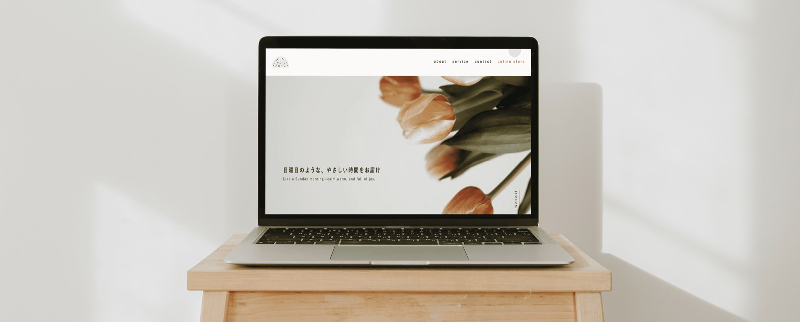
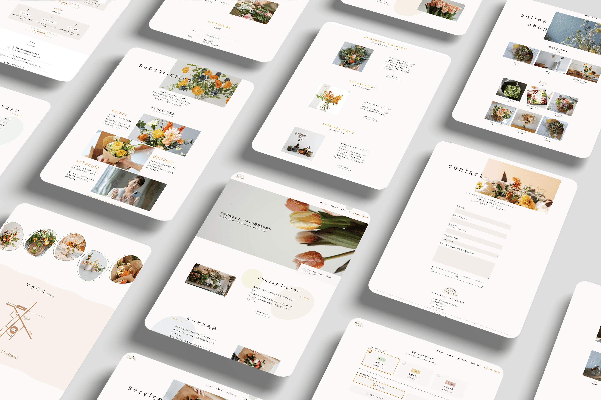
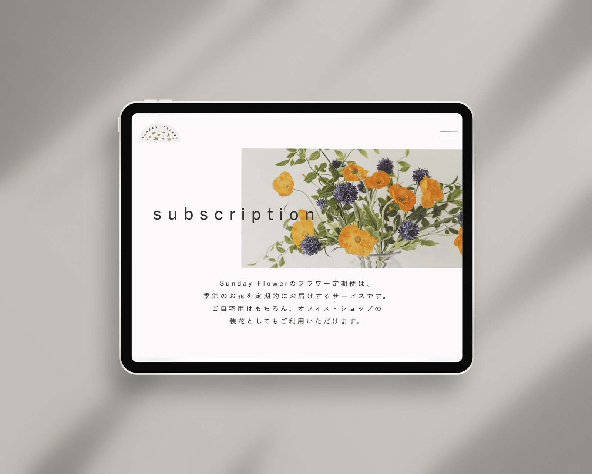
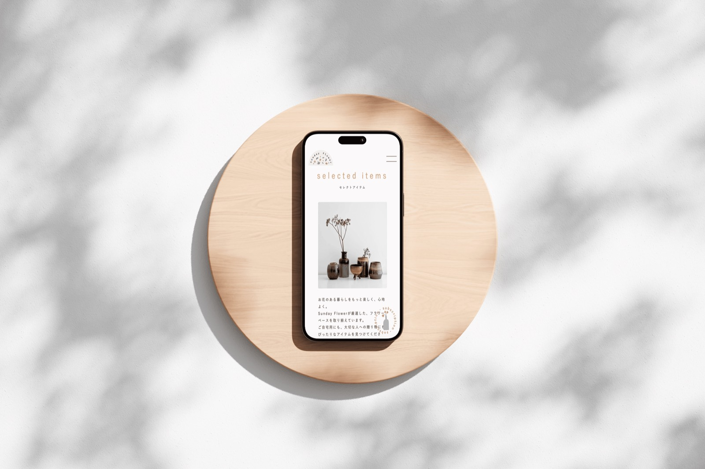
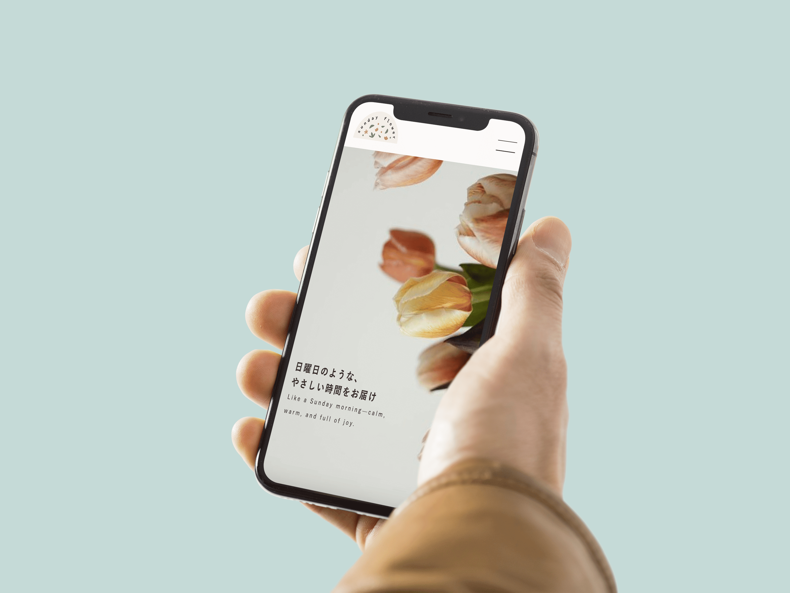

sunday flower
フラワーショップ公式サイト
制作概要
法人向け生花販売を行ってきた株式会社日本生花様が、新たに一般消費者向けフラワーショップ「Sunday Flower」をオープン。
そのブランド立ち上げに伴い、ショップの世界観を伝えるWebサイトとロゴデザインを一貫して担当。
「おしゃれだけどハードルの高さを感じさせない」アットホームな雰囲気を大切にし、初めて花を買う人にも安心感が伝わるようなデザインを目指しました。

- 課題
-
- ・店舗オープンに伴い、ブランド認知が不足している
- ・SNS以外の情報発信手段がなく、集客導線が弱い
- ・ロゴやブランドカラーが未定で、世界観が定まっていない
- ターゲット
-
- ・20〜40代の女性
- ・花に興味があり、SNSなどで情報収集する層
- ・ギフト需要や日常使いを想定した幅広いユーザー
- 目的
-
- ・Sunday Flowerブランドの世界観を視覚的に伝える
- ・店舗の立地・サービス内容・商品を的確に伝え、来店・購入につなげる
- ・スマートフォンからの利用に最適化し、ユーザー体験を向上させる
- デザイン
-
- ブランドカラー：全体にやさしく温かみのある印象を与えることで、「日曜日のようなやさしい時間」をテーマとしたブランドイメージを視覚的に表現。パステル調でまとめることで、ユーザーに安心感と親しみを与えるカラーパレットに設計。
- フォント：可読性を損なわず、親しみやすさと清潔感を両立。英字と日本語の調和を意識し、ナチュラルで洗練されたブランドイメージを補完。
- ロゴ：店舗名「Sunday Flower」を象徴するチューリップのやわらかなフォルムと色味をモチーフに、自然な曲線と生成りカラーを基調としたロゴを制作。 ブランドのやさしさ・安心感・温もりが感じられるよう設計し、名刺・ショップカード・Web用favicon・SNSアイコンなど、複数の展開先での使用を想定したメイン・サブのロゴバリエーションを用意。
- 情報設計
-
不安や緊張を感じさせないよう、情報はミニマルかつ直感的に整理。
トップでは「Sunday Flowerとは？」→「取り扱いの花」→「ギフト提案」→「店舗情報・地図」と進み、利用シーンがすぐに思い浮かぶよう補完しています。
スマホファーストで、片手操作でもストレスのない導線を重視しました。 - 制作期間・ツール
-
- 制作期間：27日間（設計〜デザイン納品まで）
- サイトマップとヒアリング設計：3日
- ワイヤーフレーム：1週間
- デザイン制作：1週間
- コーディング：10日間
- 使用ツール：Figma / Illustrator / Photoshop / html / css / javascript（jQuery）


学び
実在の企業をモデルにした課題制作を通じて、ブランドの立ち上げに必要な情報設計やトーン＆マナーの統一感について理解を深めることができた。 コンセプトに沿ったビジュアル表現を意識し、色・フォント・レイアウトに一貫性を持たせることの重要性を学んだ。 制作の流れ（サイトマップ → ワイヤーフレーム → デザイン → コーディング）を一通り経験することで、全体設計の中での各工程の役割とその連携の大切さを体感。 今後は、実際のユーザーの視点を想定した導線設計や、より客観的なレビューを取り入れた改善にも取り組みたい。

プレビュー